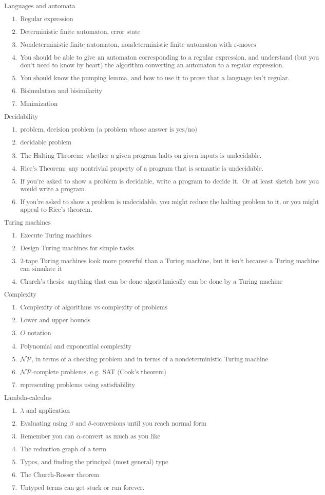

Progress
WOOOTT You found a hidden page! You hacker! Well done! Too bad this isn't used anymore though. Easter egg for you HAHA.
Software Engineering
Computational Vision
Models of Computation (Topic list)

Introductory Databases
Professional Computing
Computer Systems and Architecture
C/C++
Graphics
Math Techniques (Topic list)
Mathematical Techniques for Computer Science Topics
- Systems of Linear Equations. Gaussian Elimination
- Gaussian Elimination special cases
- Analytic geometry in the plane
- Analytic geometry in 3D
- Two other ways of describing lines and plane
- The Inner product
- Matrices and matrix algebra
- Sets
- Cardinality: Countable and Uncountable sets
- Relations
- Functions
- Inductive definitions
- Probability
- Discrete Random Variables
- Continuous Random Variables
Computer Security
Natural Language Processing